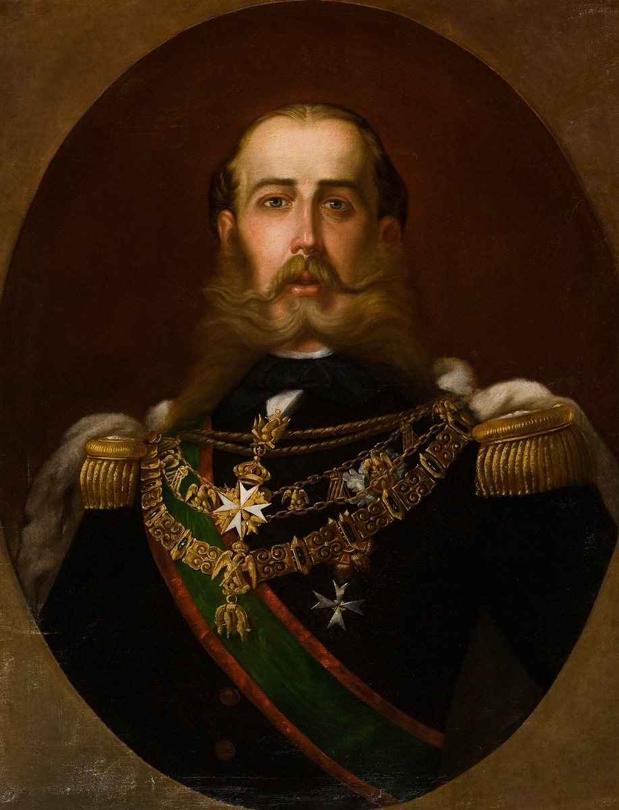
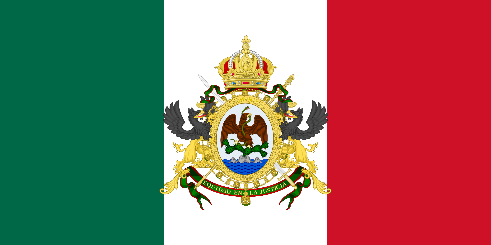

Mapa del Primer Imperio Mexicano
El Primer Imperio Mexicano abarcó gran parte del territorio que hoy conocemos como México, aunque con algunas pérdidas territoriales importantes como Texas.
Texas se separó en 1836 tras conflictos con el gobierno mexicano, lo que eventualmente llevó a la guerra entre México y Estados Unidos.
México perdió casi la mitad de su territorio ante Estados Unidos después de esta guerra.

Maximiliano de Habsburgo
Maximiliano de Habsburgo fue un archiduque austríaco que se convirtió en emperador de México en 1864 con apoyo francés, en un intento de instaurar un imperio europeo en América.
Su gobierno fue breve y terminó en 1867, cuando fue capturado y ejecutado por las fuerzas republicanas lideradas por Benito Juárez, consolidando la república en México.

Imágenes históricas
Este evento marcó un capítulo importante en la historia de México y su lucha por definir su identidad y soberanía.

Conclusión
El Imperio Mexicano, tanto en su primer periodo como en el segundo, fue fundamental para entender los desafíos y cambios que forjaron el México moderno.
Las pérdidas territoriales y las luchas internas dejaron lecciones importantes para la consolidación del país.